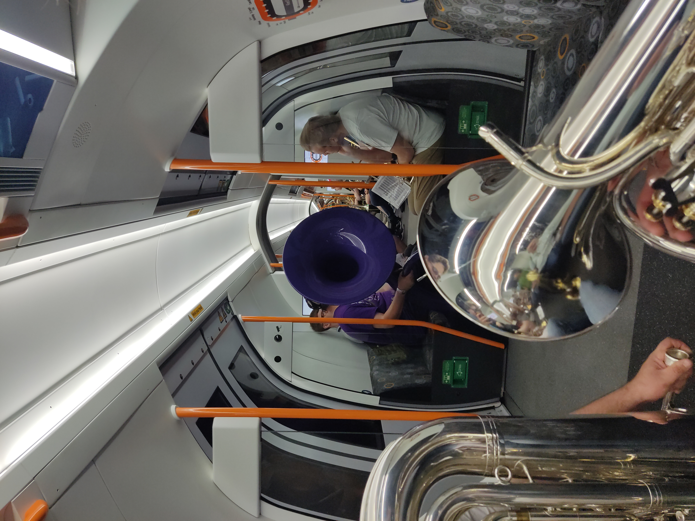

While digging into data is the reason we are here on this earth, I also hope to use this page to show the musical trips I take when playing or listening. It’s been a great summer for brass and I have plenty to talk about so we'll start there and go ever onwards.

Marching with the co.

Subway with the co.